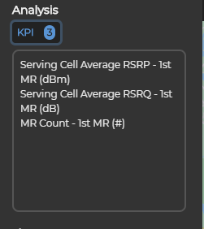
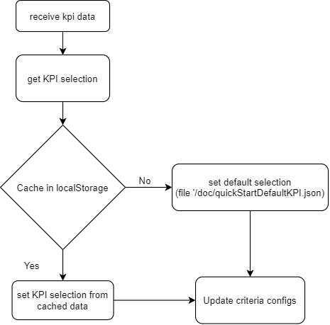
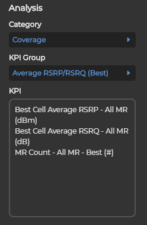
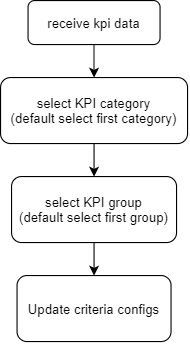

KPI
Receive KPI data after selecting modePart
Data structure
[
{
categoryId: 1104001,
categoryName: "Coverage",
categoryVisible: true,
kpiAnalysisGroups: [
{
kpiGroupId: 1204001,
kpiGroupName: "Average RSRP/RSRQ (Best)",
kpiGroupVisible: true,
criteriaPartId: 42100,
criteriaTimeConfigId: 1002,
criteriaScopeConfigId: 2401,
criteriaConditionConfigId: 0
kpiAnalysisList: [
{
kpiAnalysisId: 13040001
kpiAnalysisName: "Best Cell Average RSRP - All MR (dBm)"
kpiAnalysisVisible: true
comPartId: 1
comMapObjectId: 101
comReportObjectId: 201
elementUnit: "dBm"
}
...
]
}
...
]
}
...
]
Quick Start


Flow

Deep Dive

Flow

Update criteria configs
Every KPI group has a set of criteria configs: time/scope/condition
Get supported time mode: /rest/criteria-service/time/getById?id=${criteriaTimeConfigId}
Get scope data: /rest/criteria-service/scope/getById?id=${criteriaScopeConfigId}
Get condition data: /rest/criteria-service/condition/getById?id=${criteriaConditionConfigId}